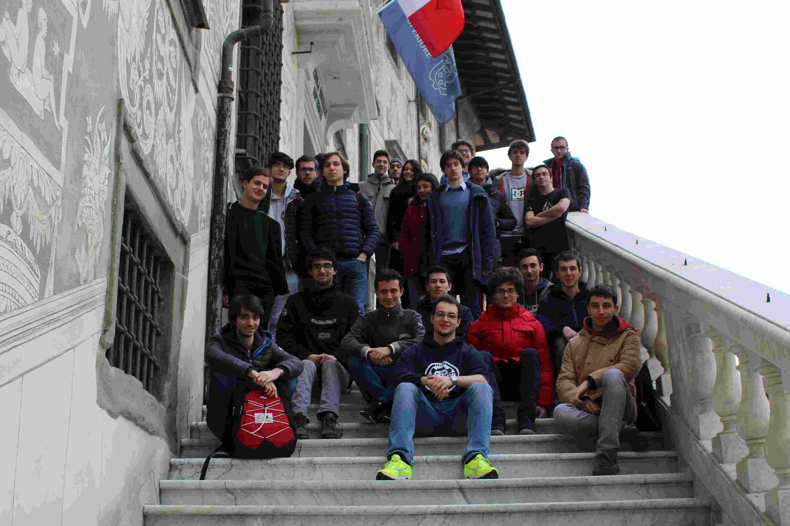
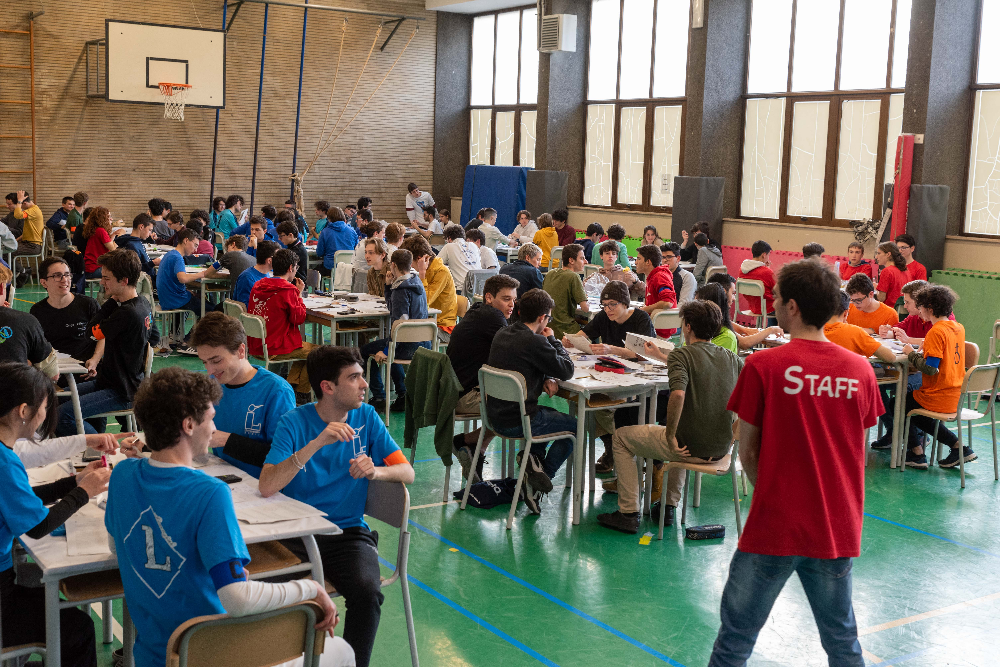
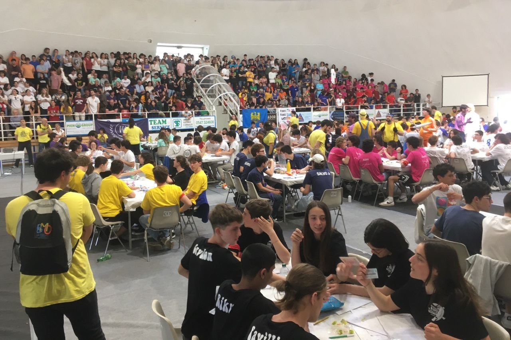

As a high school student, I took part in the Physics and Math Olympiads, winning gold medals at the Italian national finals of both, as well as a honourable mention at the International Physics Olympiad 2015 in Mumbai (India). The Olympiads influenced significantly my subsequent life choices, studies and career. Perhaps for this reason, I now enjoy volunteering to organize the competitions and a number of related events.

Physics stage in Pisa
In 2018, a group of students of Scuola Normale Superiore (including myself) gave birth to a winter stage in Pisa focused on international-level training for Physics Olympiads, with the goal of improving the Italian performance over the years. Every year, 24 students from all over Italy are selected and come to Pisa for an intensive week of training. I lectured on geometric optics in 2018, on celestial mechanics in 2019 and on miscellaneous topics in 2020. After moving to Amsterdam for my PhD, I continued to collaborate, preparing the problems for the initial test in 2021, 2022, 2023 and 2024, as well as a number of other things.

Team physics competition
After many years of preparation, in 2023 a group of students of Scuola Normale Superiore (including myself) gave birth to the team physics competition. This emulates the team math competition, which has existed in Italy since the early 2000s. In each team, five high-school students cooperate to solve the problems and submit their solutions live, their live score going up if the solution is correct or down otherwise. In 2023, 682 different teams took part in the qualifiers. The best 20 teams are invited to the national finals in Senigallia, where the competition takes place in person as a sport-like event.
I coordinate the scientific part of the activities, including the selection and writing of the problems.

Math Olympiads
I am also a collaborator of the Italian Math Olympiads. I help organizing the national finals in Cesenatico and create new problems, mostly for the team competition. Here is a cool one.
Consider the polynomial
.
Define the function
by copying the expression of
and replacing every term of the form
with
.
What is the value of
?